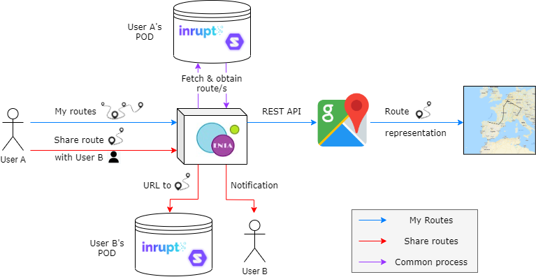
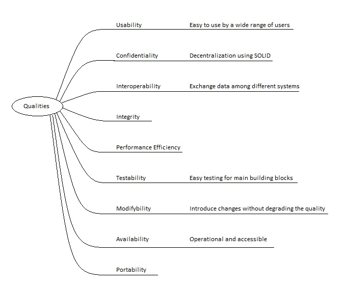
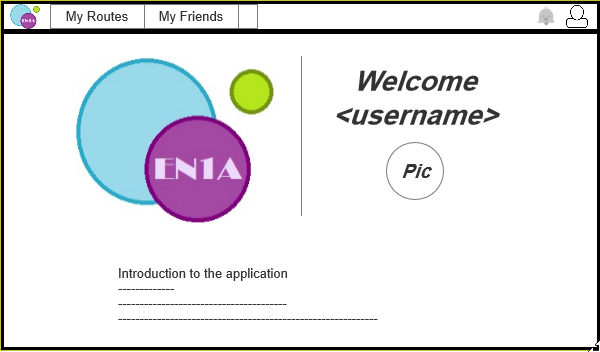
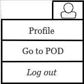
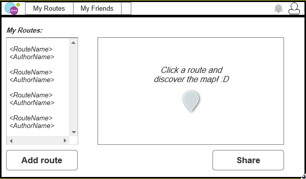
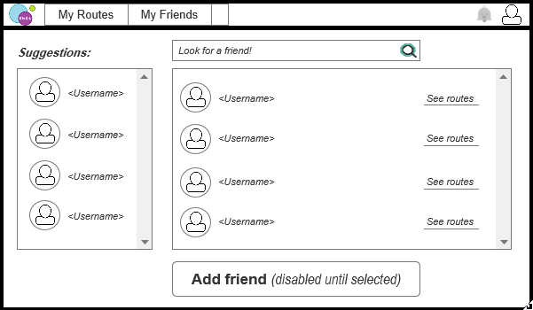
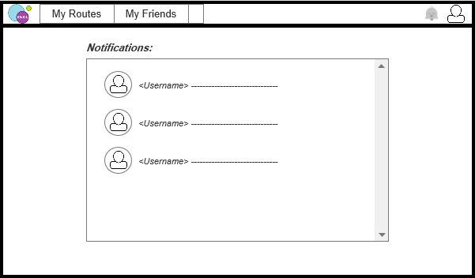
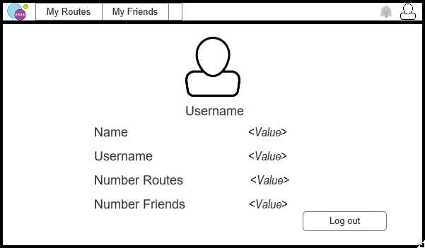
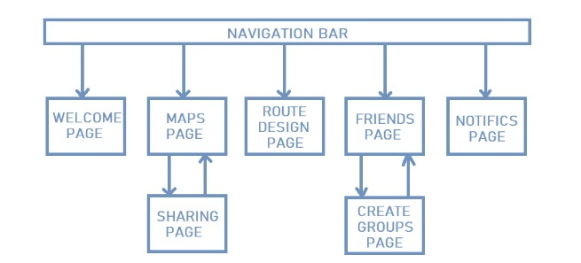

1. Introduction and Goals
The goal of this project is to develop an application which is able to store user routes in a decentralized manner but still manages to share these decentralized routes with other users.
The technologies that will be used in the development of this application will be React in the front-end and a SOLID based server in the back-end, as well as JSON-LD for the parsing of routes and GPX for the use of mapping data.
For the foundations of the project we used an open source generator for Solid-React applications.
1.1. Requirements Overview
These are the functional requirements our application will provide:
-
Data stored in a decentralized way (separated from the application). Each user has their own pod for the routes to be stored on.
-
Users are able to view their routes in a map.
-
Users have the possibility to add media elements to their routes.
-
Users can share the data stored in their pods with other single users or with groups of users selected by them.
-
Users get a notification everytime a route is shared with them.
-
Users can use this application in addition to other interoperable ones, as we follow the established conventions of ViadeSpec interoperability proposed by Luis Presa.
1.2. Quality Goals
-
Quality goal: Annotate and qualify the functionality.
| Quality goal | Motivation |
|---|---|
Confidentiality |
The control of user data should be decentralized. |
Security |
The application shouldn’t have vulnerable points. |
Interoperability |
The application should be able to work with other systems. |
1.3. Stakeholders
| Role/Name | Expectations |
|---|---|
Teachers of the course |
The teachers of the course expect the students to deliver a project which is completely functional and fulfills the requirements provided. |
Users |
The people who will use the application expect it to be easy to use, functional and secure. |
Inrupt |
Tim Berners Lee ans his team expect us to provide an application which helps in the decentralization of the web by using SOLID and its principles. |
Future Developers |
Other developers would expect the code to be understandable and easy to maintain. |
Other students |
Next year students would like to understand the code and its functionality, and perhaps reuse some parts of it. |
The Team |
As programmers, we expect to learn new development environments and develop a final product that we can be proud of. |
2. Architecture Constraints
| Constraint | Description |
|---|---|
React |
The appplication must work with react |
Solid |
The application must work with solid |
RDF |
The application must follow RDF specifications |
| Constraint | Description |
|---|---|
Team |
The team is composed of seven people |
Time |
The application must be completed before the end of the curse |
Scope |
Decentralized application for managing routes |
Data |
Data storage is separated from the app |
| Constraint | Description |
|---|---|
JS Documentation |
Use JSDoc |
3. System Scope and Context
Viade is an application that will allow the user to store routes, view them on a map, share them with friends who are also using Viade, alongside multimedia like videos and pictures of said routes. Users will also be able to create their own routes inside the application and will also be able to manage their POD friends and groups of friends.
Our objective is to develop Viade as a decentralized application, so users will be the ones storing all their information and thus, increasing the privacy and data security of the system, by not having any central server to store and manage said data.
3.1. Business Context

3.2. Technical Context

| Business interface | Channel |
|---|---|
Sharing or storing routes |
Upload to a POD (https). |
Viewing routes |
Download from a POD (https). |
4. Solution Strategy
The application will be built using React and Solid. We use React for creating user interfaces and managing the data of the application in an easy way, which is useful for our application, whose data is always changing. Solid is a platform used for developing decentralized applications. It allows users to have full control of their own data, by means of PODs, which are unique for each user. We follow this approach since Solid provides an easy way to save the data of each user and share it with others users and React allows us to develop the user interface in a simple way.
The way of working is based on the division of the work in small teams inside de whole team. The team has regular meetings, where we decide how to divide that work. The team communicates frequently in order to make the development of the application easier.
5. Building Block View
Hola The building block view shows the static decomposition of the system into building blocks (modules, components, subsystems, classes, interfaces, packages, libraries, frameworks, layers, partitions, tiers, functions, macros, operations, datas structures, …) as well as their dependencies (relationships, associations, …)
This view is mandatory for every architecture documentation. In analogy to a house this is the floor plan.
Maintain an overview of your source code by making its structure understandable through abstraction.
This allows you to communicate with your stakeholder on an abstract level without disclosing implementation details.
The building block view is a hierarchical collection of black boxes and white boxes (see figure below) and their descriptions.

Level 1 is the white box description of the overall system together with black box descriptions of all contained building blocks.
Level 2 zooms into some building blocks of level 1. Thus it contains the white box description of selected building blocks of level 1, together with black box descriptions of their internal building blocks.
Level 3 zooms into selected building blocks of level 2, and so on.
5.1. Whitebox Overall System
The application will be designed following a MVC (Model View Controller) pattern, therefore the main structure of the application will be as follows:

- Motivation
-
MVC is a very often used software design pattern for implementing user interfaces.
- Contained Building Blocks
-
-
Model: Central component, detials the structure of the application, it’s data, logic and rules.
-
View: Representation of the information, graphical interface.
-
Controller: Accepts input and converts it to commands for the model or view.
-
5.2. Opening Black Box

Let’s explore the main models for the viade app
- Routes

Routes are stored as json-ld and savend on the solid pod
- Friends
-
Friends are native elements to solid, friends are added trought the user’s POD interface.
Friends can be seen from the Friends view on the app and also when sharing a route, from which they can be selected.
- Notifications
-
Notifications are used for alerting users of new routes that have been shared with them by friends.
6. Runtime View
6.1. <Add track>
-
A user can add tracks to their pod.

6.2. <View track>
-
A user can add see tracks from their pod.

6.3. <Share track>
-
A user can share tracks from their pod to friends.

7. Deployment View
-
Computer with internet access
-
Node.js
-
A Solid POD by registering with either Inrupt or Solid Community.
-
For being able to fully use the application, you’ll need to do the following:
-
For a correct functioning of the application, you must be logged in into your Solid POD outside of the application.
-
Give total control to the application over your POD when first logging in (or from your POD).
-
In privacy settings for your inbox folder, create a rule such that anyone can make submissions to it.
-
In the Viade folder that the app will generate in your POD, create a rule such that anyone or your friends, being the latter the recommended one for security reasons, can view the contents inside it.
-
For the sharing functionality to work properly, both you and the person who you want to share a route with, must have each other added as a friend in Solid.
-
Routes imported into the application must follow the JSON-LD syntax of the ViadeSpec, similar to the following example:
-
{
"@context": {
"@version": 1.1,
"comments": {
"@id": "viade:comments",
"@type": "@id"
},
"description": {
"@id": "schema:description",
"@type": "xsd:string"
},
"media": {
"@container": "@list",
"@id": "viade:media"
},
"name": {
"@id": "schema:name",
"@type": "xsd:string"
},
"points": {
"@container": "@list",
"@id": "viade:points"
},
"latitude": {
"@id": "schema:latitude",
"@type": "xsd:double"
},
"longitude": {
"@id": "schema:longitude",
"@type": "xsd:double"
},
"elevation": {
"@id": "schema:elevation",
"@type": "xsd:double"
},
"author": {
"@id": "schema:author",
"@type": "@id"
},
"rdf": "http://www.w3.org/1999/02/22-rdf-syntax-ns#",
"rdfs": "http://www.w3.org/2000/01/rdf-schema#",
"schema": "http://schema.org/",
"viade": "http://arquisoft.github.io/viadeSpec/",
"xsd": "http://www.w3.org/2001/XMLSchema#"
},
"name": "Route test 1",
"author": "https://luispresacollada.solid.community/profile/card#me",
"description": "This is a test to see the output of the JsonLDConversor",
"comments": "http://inrupt.luispc1998/viade/comments/routeComments/commentExample.json",
"media": [
{
"url": "http://inrupt.luispc1998/viade/resources/imagen.jpg"
},
{
"url": "http://inrupt.angelixus/viade/resources/video.mp4"
},
{
"url": "http://inrupt.raupemol/viade/resources/foto.png"
},
{
"url": "http://inrupt.luispc1998/viade/resources/video3.mp4"
}
],
"waypoints": [
{
"name": "Name for the waypoint",
"description": "Description of the waypoint",
"latitude": 45.123,
"longitude": 34.121,
"elevation": 34
},
{
"name": "Computer Science School",
"description": "Become a good engineer with us",
"latitude": 45.123,
"longitude": 34.121,
"elevation": 34
}
],
"points": [
{
"latitude": 45.123,
"longitude": 34.121,
"elevation": 34
},
{
"latitude": 46.123,
"longitude": 34.121,
"elevation": 36
},
{
"latitude": 47.123,
"longitude": 34,
"elevation": 39
},
{
"latitude": 48.123,
"longitude": 32.121,
"elevation": 40
},
{
"latitude": 49.123,
"longitude": 34.121,
"elevation": 43
},
{
"latitude": 40.123,
"longitude": 32.121,
"elevation": 46
},
{
"latitude": 50.123,
"longitude": 33.121,
"elevation": 50
},
{
"latitude": 53.123,
"longitude": 34.121,
"elevation": 55
},
{
"latitude": 54.123,
"longitude": 34.121,
"elevation": 56
},
{
"latitude": 55.123,
"longitude": 35.121,
"elevation": 50
},
{
"latitude": 55.123,
"longitude": 34.121,
"elevation": 45
}
]
}8. Cross-cutting Concepts
8.1. Route
It is the main concept in this application, representing a sequence of points in the space.
-
For the user, they are shown as a graphic polyline in a map.
-
On the logic of the system, they are treated as a collection of coordinates.
-
The coordinates are stored in the PODs.
8.2. Solid POD
Storage device based on Solid that stores user data in a private and decentralized approach. In our application, it’s main uses will be:
-
Storing routes. Imported routes will be stored in the user’s Solid POD. This also includes any multimedia the user has decided to add to the route.
-
Sharing routes with other users by allowing them to retrieve it and store them in their own PODs.
8.3. Notification
It is the core element in the communication between different users.
-
A notification is sent everytime a user shares a route with any friend.
-
It contains the URL in the sender’s POD of the resource that is being shared, f.i User A, which has
https://usera.podas his POD URL, shares a route with User B, whose POD ishttps://userb.pod. Thus, a notification will arrive tohttps://userb.pod/inboxwithhttps://usera.pod/public/routes/route.jsonas the content. -
In order to achieve interoperability, we need to agree about how this notification works. First, the different parts that shape the notification, f.i content, date, sender, receiver, etc. Equally, the discussion about where the notification has to be sent, f.i folder
inbox/in the POD.
8.4. JSON-LD
Method of encoding Linked Data using JSON. Used to store the routes for sharing between PODs so that our application can be compatible with the routes done by users of other Viade applications, provided that they are storing the routes in JSON-LD and following the Viade Specification.
8.5. Viade Specification
Linked Data specification developed by the students of Software Architecture for making our apps and routes compatible with each other by documenting a common data model.
8.6. Solid POD friends
Users may add other users as friends in the Solid PODs, but as stated in Deployment View, for the sharing capabilitites to work, friendships must be reciprocal.
9. Design Decisions
Decission |
Description |
Advantages |
Disadvantages |
Arc42 |
It provides a template for documentation and communication for the development of the project. Arc 42 eases the process of developing and improving the software architecture. |
Commonly used template in Europe for software documentation, which can be converted into and HTML page with relative ease for its release to the internet. |
Even though it has some guidelines, it’s not really restrictive nor hand-holding, meaning that we’ll be a bit lost while trying to document our application, as we have no experience with Arc42. |
React |
React is the framework chosen to implement the user interfaces. It is based on JavaScript. It also allows the creation of mobile applications by means of Reac Native. |
One of the main advantages of using React are its libraries for working with the Solid. |
The main drawback for its election is the fact that we have never worked with it, meaning that we have no experience with React. |
Solid PODs |
The routes data will be stored in the users' PODs, allowing users to reserve the right of deciding who can access that data. |
Since the aim of the project is developing a decentralized application, Solid PODs are a good candidate for data storing. Free, Open Source and gaining popularity, it is an interesting option to use as a base for our application. |
Again, the lack of experience with this technology can be considered as a drawback. Moreover, Solid itself is still a project in progress, which will undoubtly lead to problems. |
GitHub |
This is where the project’s repository will be located, facilitating us coordinating and taking decissions. Using Git allows us to mantain a different set of branches, with different purposes (e.g., develop, release, master…). |
Since this a 7 people teamwork, the usage of Git is unquestionable. While there are a bunch of Git hosts, Github is the most used and a feature rich one, meaning that there are no real reasons for using another alternative. |
The usage of GitHub hardly has any disadvantage, aside from it’s learning curve, which is not a huge problem. |
Google Maps API |
We decided to use this API to easily show an interactive world map in our application, and load routes in it, so that users can visualize them. |
It is really easy to integrate in any web app, it also provides a great support for displaying routes using GeoJSON and it’s the most complete map API out there. |
The only disadvantage we can find is the need to use an API key for which you will have to pay once you exceed the number of free requests. For the moment, this does not reprensent a problem for our application, since it is not being used massively. |
GeoJSON |
GeoJSON is an open standard, based in JSON, specifically designed for representing geographic elements. |
Those elements represented with this format can be directly shown in the Google API map, thanks to its Data Layer, meaning that it offers and easy way to show the routes once they have been converted to valid GeoJson objects. Since we are using JSON-LD for storing and sharing routes, there is another advantage, since converting from JSON-LD to GeoJSON is as simple as moving attributes from one Javascript object to another. |
It needs to be extended, since we need to add extra information to our rutes, e. g., pictures or a description, as it is not as complete as standards like GPX, although with the usage of JSON-LD it has not been an issue for us. |
JSON-LD |
This provides a method for encoding Linked Data in a JSON format. |
JSON-LD, together with an specific folder structure, allows us to archieve interoperability with other Viade apps in an easy way, while also being easy to parse and interact with thanks to the Javascript JSON object. |
This format can not be directly displayed in our map, but it is really easy to parse it into a GeoJSON format. It is also not compatible with those Viade apps that are using Turtle as their Linked Data format |
Molid |
This package offers an easy way of implementing a complete mock Solid server locally, and simulate HTTP requests to it. |
Thanks to Molid, a sizable portion of our app can be easily tested without the need of a real POD and Internet conexion. |
You must create (or copy) and edit the necessary files, with the correct format, to simulate a real and functional POD. |
LDflex |
LDflex allows yo querying Linked Data from the Internet as if you were traversing a local JavaScript graph. |
With this package we can obtain, with an slight effort, information placed in files referred in the original file we are querying, for example, our friends' names. |
You are forced to fecth data in an asynchronous way, which leaded us to some problems, such as entering inifinite loops, or rendering views without contents. |
10. Quality Requirements
10.1. Quality Tree

10.2. Quality Scenarios
A table with quality goals and concrete scenarios, ordered by priorities.
-
Quality goal: Annotate and qualify the functionality.
-
Scenario: Describe how the system should behave. It specifies quality requirements.
-
Priority: It has two values: importance for success, and how difficult it is to be achieved.
| Quality goal | Scenario | Priority |
|---|---|---|
Usability |
Non-technical people should easily use the application. In case they want to look for information, the content should be found quickly (data taken from real users: 93%) |
High, Medium |
Confidentiality |
The control of user data should be decentralized. This way the user has a complete control of the data they share and receive. |
High, High |
Interoperability |
Our system should be able to exchange data with other systems and present that data so it can be understood by the user. |
High, High |
Integrity |
The application shouldn’t have vulnerable points: a third party shouldn’t be able to access the data. |
High, Medium |
Performance efficiency |
The response and processing times of the application should be quick (avg time: 6 seconds). |
High, Medium |
Testability |
The architecture should be designed in such a way that it successfully passes the tests for its implementation (). |
High, Medium |
Modifiability |
As Solid is a pioneer evolutive technology, our application should be able to accept changes and be modified. |
Medium, Low |
Availability |
Online independence: The user should be able to use the application without need of Internet connection (Not working). |
Medium, Medium |
Portability |
The system could work on a mobile device (80%, still working on it). |
Low, High |
11. Risks and Technical Debts
11.1. Risks
Because of the complexity of this project and the use of technologies we have never tried before, the team may encounter some problems while developing the application. These are some of the problems we expect to have and, hopefully, surpass.
-
Use of React: No member of the team has ever worked with React , so learning how this new language works will probably slow down the development.
-
Use of SOLID: None of us has ever worked with servers before and we had never heard of SOLID, so it is a scary and hard topic to tackle for all members of the team.
-
Group work: Because we are working in a group with a big number of members we may face some troubles when trying to communicate, organize and come to an agreement on some important decisions.
-
Use of git: Although this is not the first time we are using git we are still not experts on the subject (especially when using it from a command window), so some branch merges and conflicts may be difficult to perform and solve.
-
Lack of experience: As we are still third year students, there are a lot of libraries and helpful tools we don’t know about, and some others that will be hard for us to use. Because of this lack of knowledge and experience, we may pass on using some unknown beneficial tools and, instead, waste our time trying to use more difficult ones.
11.2. Technical Debt
Because of the risks mentioned before and some decisions taken by the team, we are aware of some aspects of our application that could be improved. These are some that we hope to fix in the near future.
-
Few Test: Until now we have chosen to focus more on implementation than testing so we hope to take our codecov to, at least, 60% by the next deliverable.
-
Unnecesary code: Due to the generator we used at the beggining, we have a lot of code we don’t use and/or don’t understand. This code should be deleted to avoid security issues and a dirty project.
12. Prototypes






12.1. Navigation Map

13. Glossary
| Term | Definition |
|---|---|
Viade |
Viade is a Solid-React application that allows you to store and view your routes as well as share them with you Solid friends in a decentralized way. |
SOLID |
Solid (derived from "social linked data") is a proposed set of conventions and tools for building decentralized social applications based on Linked Data principles. Solid is modular and extensible and it relies as much as possible on existing W3C standards and protocols. |
POD |
User data is stored in its own Solid POD. PODs are like secure USB sticks for the Web, that you can access from anywhere. |
React |
React is a declarative, efficient, and flexible JavaScript library for building user interfaces. It lets you compose complex UIs from small and isolated pieces of code called “components”. |
Asciidoctor |
Asciidoctor is a fast, open source text processor and publishing toolchain for converting AsciiDoc content to HTML5, DocBook, PDF, and other formats. Asciidoctor is written in Ruby and runs on all major operating systems. |
Node.js |
As an asynchronous event-driven JavaScript runtime, Node.js is designed to build scalable network applications. |
Ruby |
Ruby is an interpreted, high-level, general-purpose programming language. It is dynamically typed and uses garbage collection. It supports multiple programming paradigms, including procedural, object-oriented, and functional programming. |
GPX |
GPX or GPS exchange format is an XML file format for storing coordinate data. It can store waypoints, tracks, and routes in a way that is easy to process and convert to other forms. |
JSON-LD |
JSON-LD is a method of encoding linked data for JSON, we use it in order to achieve interoperability with other Viade applications. |
DOCKER |
Docker is a service that allows to deliver software in packages called containers. |
CUCUMBER |
Cucumber is a behaviour-driven development software tool used for testing purposes. |
TRAVIS |
Travis is a continuous integration service used for testing and building projects. |
CODACY |
Codacy is a continuous integracion service that checks the quality of the project by performing an automatic review of the code. |
CODECOV |
Codecov is a continuous integration tool that examines how many code lines were executed by a test suite and calculates what percentage of the project has been tested. |
About arc42
arc42, the Template for documentation of software and system architecture.
By Dr. Gernot Starke, Dr. Peter Hruschka and contributors.
Template Revision: 7.0 EN (based on asciidoc), January 2017
© We acknowledge that this document uses material from the arc 42 architecture template, http://www.arc42.de. Created by Dr. Peter Hruschka & Dr. Gernot Starke.